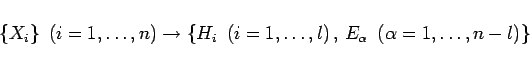
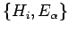
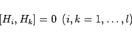
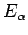
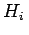
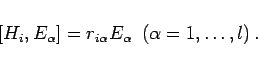
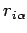
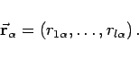

Inhalt Index DeskTop Bronstein

 Algebra und Diskrete Mathematik Klassische algebraische Strukturen Darstellungen halbeinfacher Lie-Gruppen
Algebra und Diskrete Mathematik Klassische algebraische Strukturen Darstellungen halbeinfacher Lie-Gruppen


Nach einem Theorem von CARTAN kann in einer halbeinfachen LIE-Algebra der Dimension n durch die Transformation
|  | (5.153) |
eine spezielle Basis  (CARTAN-WEYL-Basis, Standardbasis) so eingeführt werden, daß l linear unabhängige, miteinander kommutierende Operatoren Hi
|  | (5.154) |
eine Unteralgebra aufspannen. Die Zahl l wird als Rang der LIE-Algebra (LIE-Gruppe) bezeichnet. Die Operatoren  spannen die Teilalgebra der Dimension n-l auf. Sie kommutieren weder untereinander noch mit den Basiselementen . Z.B. gilt:
|  | (5.155) |
Die reellen Zahlen  lassen sich zu einem Vektor  (Wurzelvektor) in einem l-dimensionalen Raum zusammenfassen:
(Wurzelvektor) in einem l-dimensionalen Raum zusammenfassen:
|  | (5.156) |
Das System der Wurzelvektoren kann benutzt werden, um die möglichen LIE-Algebren zu klassifizieren. Da zu jeder Darstellung der LIE-Algebra eine Darstellung der entsprechenden lokalen LIE-Gruppe gehört, genügt es, Darstellungen der LIE-Algebra zu finden, um zu einer Klassifizierung der Darstellungen der LIE-Gruppe zu kommen.